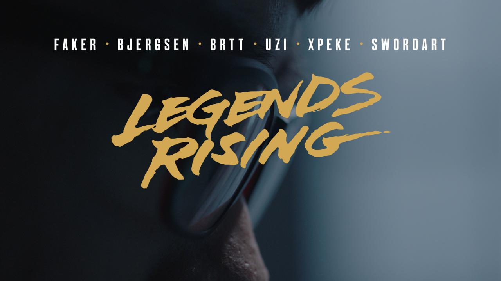
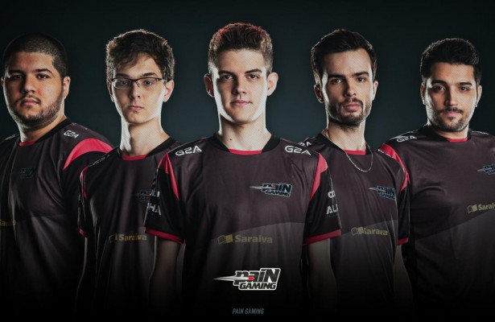

História
Como primeira equipe profissional do país, a paiN conquistou desde 2012 diversos títulos, muitos torcedores (tanto a favor quanto contra) e um lugar de destaque na história de League. Foi a equipe que desbravou fronteiras internacionais (IEM Worlds 2013 e International Wildcard 2013), formou a primeira gaming house da América Latina e sempre esteve presente em grandes decisões - como Desafio Internacional 2013, IEM São Paulo 2014 e Liga dos Campeões CBLoL 2014. Depois de um 2014 agitado e com a presença dos coreanos Olleh e Lactea, a paiN iniciou 2015 com a volta de brTT formando dupla com o francês Dioud. No topo, Leko não vingou e foi substituído após o terceiro lugar na Primeira Etapa. O topo de longa data da rival Keyd Stars, Mylon, foi o escolhido para seu lugar. A paiN Gaming surge mais assustadora que nunca para a sequência do CBLoL.
Legends Rising
Legends Rising vai além do jogo ao explorar as inspirações, os medos e o trabalho individual de alguns dos jogadores profissionais mais respeitados de League of Legends. Estas são as histórias deles, contadas dos bastidores. Assista todos os episódios:
Episódio 1: Faker e Bjergsen - "História"
Episódio 2: Uzi e brTT - "Lar"
Episódio 3: xPeke e SwordArt - "Novos Inícios"
Episódio 4: Faker e Bjergsen - "Reis"
Episódio 5: Uzi e brTT - "Família"
Episódio 6: xPeke e SwordArt - "Tempestades"
Pain no Mundial
A paiN já é considerado o melhor time vencedor do Wild Card a participar do Mundial de League of Lengeds, gerando assim, uma pressão positiva por uma boa campanha – levando inclusive em conta que o sorteio da fase de grupos favoreceu o time brasileiro, que está em um grupo que lhes dão chances reais de avançar para a próxima fase. O time em si terminou o Campeonato Brasileiro de League of Legends em uma crescente evolução do gameplay, conquistando na final o título com um 3 x 0 em cima da INTZ (um resultado inesperado).
